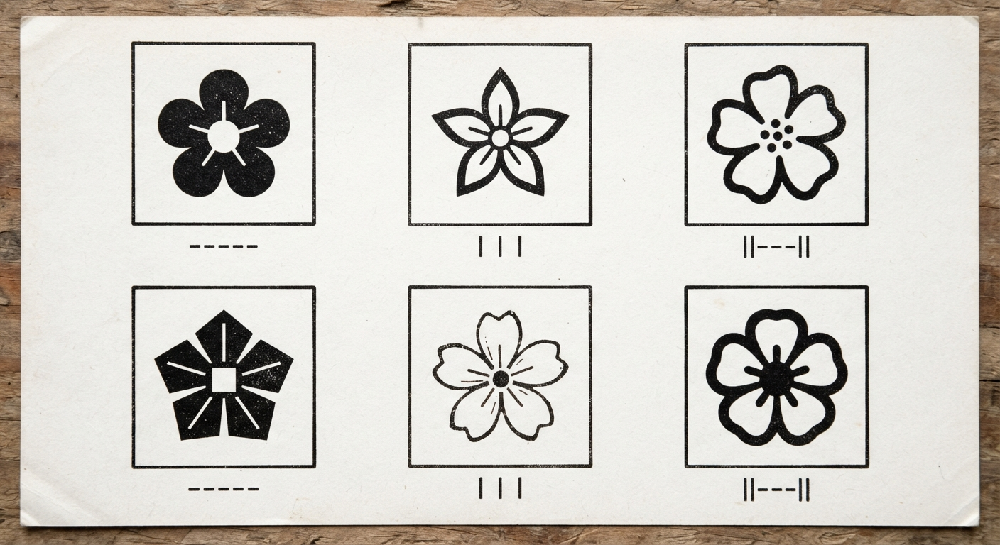
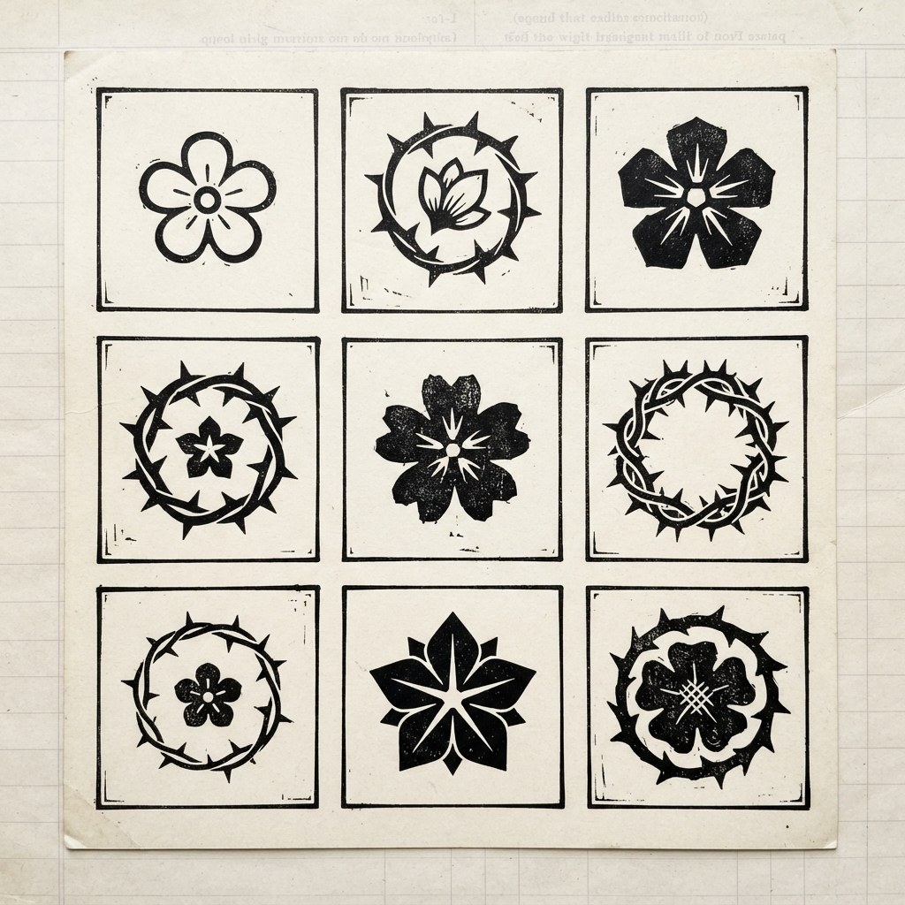

14 candidate brand marks (MARK-0 baseline + MARK-1..13 original) for the Bitterblossom operator UI, rendered at favicon (16px), nav-rail (24px), and review (96px) sizes on both noir-ledger swatches. All SVG, inline, currentColor — zero external requests.

